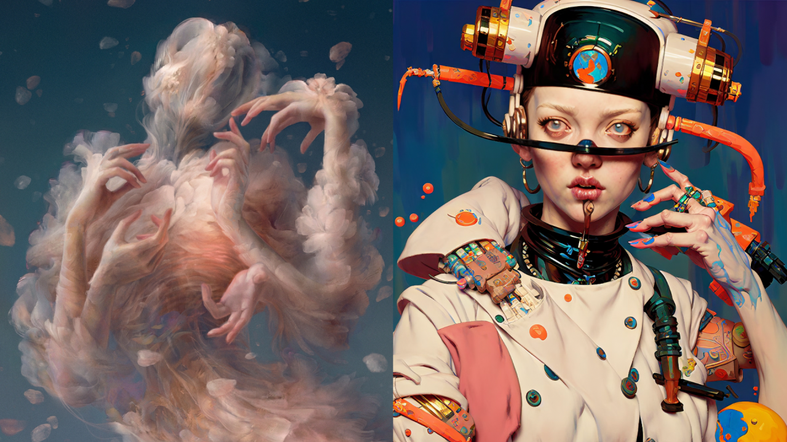

Scoprite come le storie di Gianni Rodari prendono vita sullo schermo nella nostra sezione "Dall'Opera al Cinema". Vi accompagneremo in un viaggio dalle pagine dei suoi libri agli adattamenti cinematografici e animati, esplorando le sfide e le innovazioni che hanno permesso di trasformare la sua immaginazione in magia visiva.
TRASFORMAZIONI VISIVE
La trasposizione delle opere di Gianni Rodari in cinema e animazione, come 'La torta in cielo' e 'La freccia azzurra', mette in luce le difficoltà di rendere visiva la sua immaginazione ricca e multiforme. Questi adattamenti affrontano il compito non facile di trasferire dal testo alla realtà visiva universi narrativi dove l'ordinario si mescola con l'extraordinario, mantenendo l'integrità del messaggio originale di Rodari e la sua capacità unica di incantare sia i bambini che gli adulti."
TRASFORMAZIONI CINEMATOGRAFICHE
L'adattamento operato da Anatolij Petrov e l'introduzione di tecniche all'avanguardia come il Neural Style Transfer nell'animazione rappresentano esempi emblematici di come la tecnologia possa essere al servizio della narrazione. Questi esperimenti cinematografici non solo riescono a catturare l'essenza delle storie di Rodari, ma spingono più in là i confini dell'animazione, esplorando nuove possibilità espressive e narrative. La capacità di queste tecnologie di trasformare il visivo in un'esperienza immersiva apre nuove vie per raccontare storie che restano fedeli allo spirito ludico e innovativo delle opere di Rodari.

IL FUTURO DELL'ANIMAZIONE
Le potenzialità offerte dall'intelligenza artificiale e dalle emergenti tecnologie di animazione sono immense e promettenti per l'adattamento delle narrazioni di Rodari. Questi strumenti offrono modi innovativi per visualizzare le sue storie fantasiose, permettendo agli animatori di esplorare dimensioni narrative inedite. L'avanzamento tecnologico nel campo dell'animazione non solo rende possibile una fedele rappresentazione visiva del mondo immaginifico di Rodari ma apre anche la strada a interpretazioni creative che possono arricchire e rinnovare l'eredità del suo lavoro. Guardando al futuro, possiamo aspettarci che l'unione tra la creatività rodariana e le nuove tecnologie di animazione continui a incantare e ispirare, portando le avventure narrative di Rodari in nuovi e sorprendenti universi visivi.
